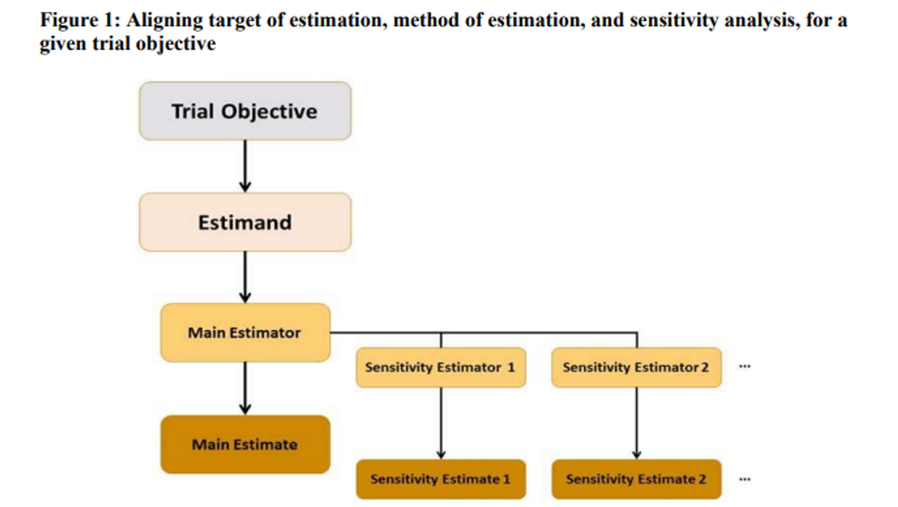

E9(R1) STATISTICAL PRINCIPLES FOR CLINICAL TRIALS: ADDENDUM: ESTIMANDS AND SENSITIVITY ANALYSIS IN CLINICAL TRIALS part 1#
1. PURPOSE AND SCOPE (A.1)#
E9(R1): Addendum의 목적 : 구조화된 프레임워크를 제시함으로서 아래 사항들을 보완
임상시험의 목표(objectives), 디자인(design), 수행(conduct), 분석(analysis), 해석(interpretation)
치료 효과(treatment effect) 또는 관심 효과(effects of interest)에 대한 의뢰사와 규제기관(regulator)간의 소통
본 문서(Addendum)은 ICH E9의 확장본으로 아래의 사항들에 대해서 다룸.
민감도 분석
Intention-To-Treat(ITT) 원칙을 항상 따라야 하는가?
ITT 원칙
무작위 배정된 모든 대상자를 처음 무작위 배정된 치료군에 속한 것으로 간주하며, 계획된 순응 여부에 관계없이 임상시험 종료까지 추적 관찰하여 평가되고 분석되어야 한다는 원칙
즉, ITT 원칙과 가장 유사한 FAS(Full Analysis Set)이나 PPS(Per-Protocol set)은 언제 사용되는지
Data handling과 결측치(missing data) 관련
Discontinuation(중도탈락)과 Study withdrawal(연구 동의철회)의 구분
다양한 Intercurrent events가 존재 → 어떻게 결측치를 처리할 것인지
Intercurrent events: 무작위 배정 이후 무작위화된 치료의 과정을 변경하는 사건 (ex: Treatment discontinuation, Use of additonal medication, Modification of background / concomitatnt therapy, Switching to another treatment, Death or other relevant outcome(surgery, progression)
Analysis Set 관련: Full Analysis Set (FAS) 와 Per Protocol Set (PP set)
Robustness 관련 → Sensitivity Analysis
2. A FRAMEWORK TO ALIGN PLANNING, DESIGN, CONDUCT, ANALYSIS AND INTERPRETATION (A.2)#

Estimand(Target of Estimation) : 통계적 추론 추정으로 나오는 추정치가 아닌 임상시험의 목적과 관련된 최종적인 목표 → xx인 조건(선정/제외기준, 분석군 등등)에서 시험약이 대조약과 비교하여 베이스라인 대비 xx 시점 이후에 SBP 수치가 더 감소했다.
Estimator(Method of estimation) → SBP의 변화량을 가지고 비교(ANCOVA, LS Mean.. )
Estimate(Numeric result)
Sensitivity Analysis : 기존 임상시험에 대한 통계분석의 원칙을 위배하지 않는 범위에서 Imputation, Simulation 등을 통해서 확인 (ex: 결측지 대체 방법을 적용한 결과와 적용하지 않은 결과를 비교)
3. ESTIMANDS (A.3)#
A. Intercurrent Events to be Reflected in the Clinical Question of Interest (A.3.1)#
Treatment effect를 설명할 때, Intercurrent events를 고려해야 한다.
EX: 두명의 대상자가 처음에는 같은 약을 처방 받았다가, 한 대상자가 중간에 다른 약을 처방 받은 경우
결측치와는 다르게, Intercurrent event는 임상시험에서 피해야 할 단점으로 간주되어서는 안됨.
Estimands를 구성할 때, Intercurrent event를 고려해야 함 (Intercurrent event가 중도탈락의 원인이 될 수 있기 때문)
B. Strategies for Addressing Intercurrent Events when Defining the Clinical Question of Interest (A.3.2)#
Treatment Policy Strategy
ICE 발생 여부와 관계없이 실제 값 사용하는 방법.
처음 무작위 배정된 치료군과 수정된 치료군의 효과가 결합되어 있음.
ICE가 발생했을 때, 완벽하게 Follow up이 되면 좋지, 결측치가 발생하는 경우가 있음.
Hypothetical Strategies
Question에 답 하는 것이 목적.
EX: Qusetion - ICE가 발생하지 않으면 무슨 일이 발생하나?
해당 전략을 사용하기에는 필요 조건들이 많고, 가정을 증명할 수 없는 경우가 있음.
결측치 대체 시 MAR (include likelihood-based methods) 방법을 이용 (ex: MMRM(Mixed effect Models for Repeated Measures) → Modeling
Composite Variable Strategies
ICE 자체가 의미가 있는 경우, ICE와 관심 변수의 정의를 통합(ex: death)
근본적인 clinical questions을 변경(ex: 병에 대한 효과 평가 vs 병에 대한 생존률(death))
분석을 할 때, ICE를 고려할 수 있는 분석 방법을 이용(ex: ANOVA or ANCOVA 분석을 할 때, BOCF(Best Observation Carried Forward) 방법 사용)
While-on-Treatment Strategies
ICE 발생 시점까지의 정보를 사용하는 경우(ex: 생존 기간, death를 ICE로 고려.)
Principal Stratum Strategies
어느 군(treatment)인지 상관 없이, ICE 상태가 동일한 집단(population)에 대해서 분석
→ 치료약 A, B를 비교하는 것이 아닌, ICE 상태에 따라 비교(추가 약물을 투여한 집단 vs 추가 약물을 투여하지 않은 집단)
Subgroup analysis 로 진행하는 것이 아닌, statistical modeling으로 진행
C. Estimand Attributes (A.3.3)#
관심 있는 Treatment effect를 정의하기 위한 estimand의 구성 요소
Treatment
처음 무작위 배정 후 치료약이 변경 없이 임상이 진행되었는지?
치료약의 추가나 변경이 허용되는지?
Population
선정/제외 기준을 만족한 모든 대상자를 대상으로 할 것인지?
Baseline characteristic에 따라 subgroup을 정의할 것인지?
Principal stratum 전략을 고려할 것인지?
Variable
측정 시점(마지막 측정 시점 포함, 4주, 8주, 12주…)은 어떻게 정할 것인지?
ICE 발생이 있을 때 허용할 것인지, 아닌지
Strategies for ICEs
모든 관련된 ICE들을 동일하게 볼 것인지
ICE 관련해서 어떤 전략을 사용할 것인지
Population-level Summary
치료군들을 어떤 방법으로 비교할 것인지?(mean difference, risk difference, odds ration…)
D. Considerations for Constructing an Estimand (A.3.4)#
Estimand 생성 시 아래의 사항들을 고려할 필요가 있음
Clinical contest(대체 의약품 사용 가능 여부)
Administration of treatment(one-off dosing, short term dosing..)
Goal of treatment(prevention, disease modification, symptom control)
신뢰할 수 있는 치료 효과(Treatment effect) 추정치를 도출할 수 있는지 여부
관심 있는 Clinical question을 해결하는 치료법을 명확하게 이해하는 것이 중요 - 미리 ICE에 대한 내용 반영이 가능(backgroup therapy로 B를 미리 설정)
Treatment Policy strategy 을 사용할 때, Characterizing 방법이 도움이 되는 경우가 있